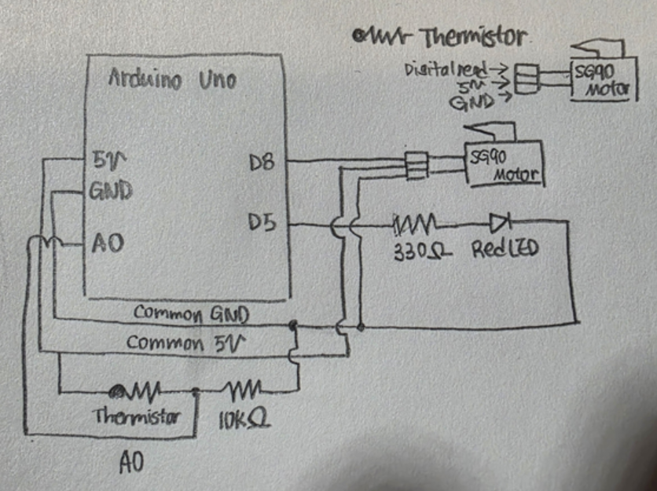
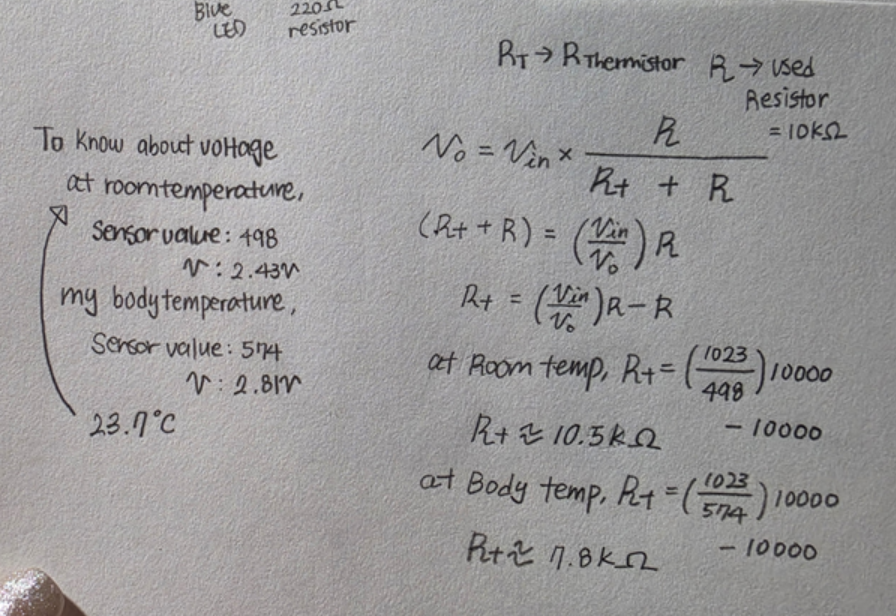
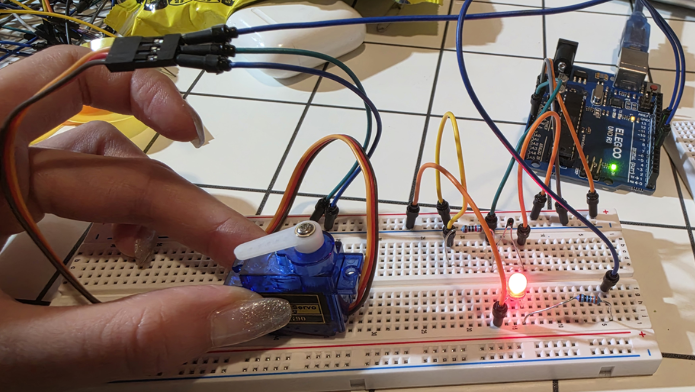
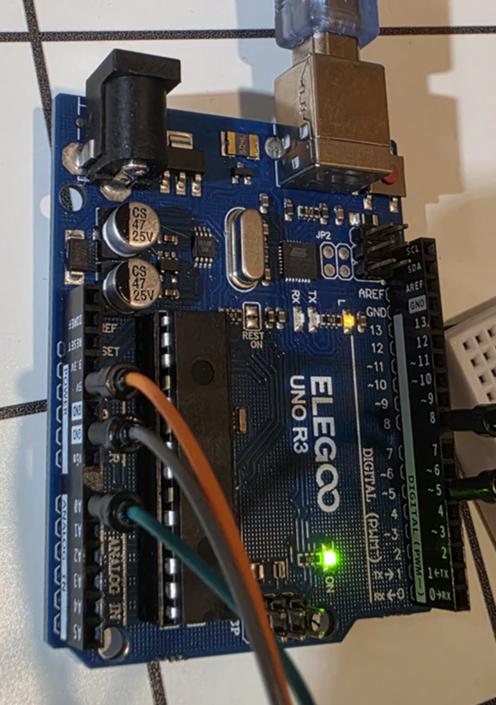
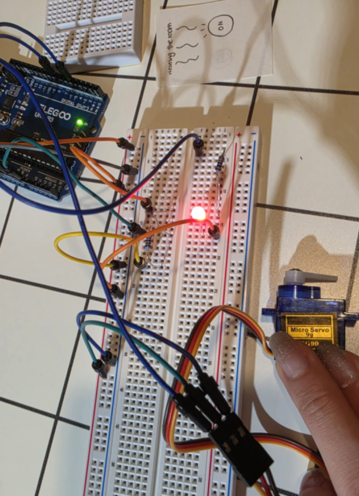
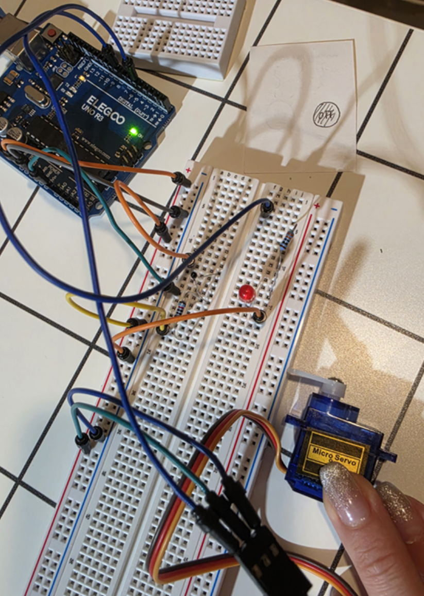

HCDE 439 - Physical Computing | Bomyung Lee | 10.26.26
An Automatic Heating Switch Prototype Using a Thermistor, PWM LED, and Servo Motor
For this assignment, I built a smart-home heating controller that reacts to changes in its surroundings. The system uses a thermistor in a voltage divider to measure temperature-related resistance changes, a red LED to show heating intensity, and an SG90 servo motor to represent a physical heating switch.
My concept is a nighttime heating system that turns on when a room gets too cold and switches off once it is warm enough. This is a working interaction prototype rather than a real heater. For a short demonstration, I treated room temperature as the simulated cold condition and warmed the sensor with my fingers to simulate a warmer environment. In an earlier experiment, the room measured about 23.7°C, so "cold" here describes the experimental condition rather than an actual uncomfortable room temperature.
| Condition | Thermistor reading | LED response | Servo response |
|---|---|---|---|
| Simulated cold (room temperature) | ADC ≤ 510 | Heating indicator ON | 180°: HEATING ON |
| Transition zone | ADC 511–549 | Brightness follows sensor value while heating stays ON | Keeps previous ON/OFF state |
| Simulated warm (hand warming) | ADC ≥ 550 | LED OFF | 0°: HEATING OFF |

The schematic matches the final tested circuit, not the earlier LCD or seven-segment display attempts. A0 measures the voltage divider junction, D5 provides PWM brightness control for the red LED, and D8 controls the servo position.
| Component | Connection | Value / Purpose |
|---|---|---|
| NTC thermistor (R1) | 5V → thermistor → A0 junction | Variable resistance when temperature changes |
| Fixed resistor (R2) | A0 junction → resistor → GND | 10 kΩ; forms voltage divider |
| Red LED | D5 → 330 Ω resistor → LED anode (+); cathode (−) → GND | PWM heating intensity indicator |
| SG90 signal (orange) | Arduino D8 | 180° = ON; 0° = OFF |
| SG90 power (red) | Arduino 5V | Servo power during prototype test |
| SG90 ground (brown) | Arduino GND | Common ground |
I chose a 10 kΩ resistor because it is close to the thermistor's inferred resistance at room temperature. Using similar upper and lower resistances gives a voltage near half the 5V supply and makes increases or decreases in sensor resistance easy to detect. The exact thermistor model and temperature coefficient were not verified, so I used actual ADC readings rather than claiming precise temperatures in °C.

Voltage divider formula: Vout = Vin × R2 / (R1 + R2)
With the thermistor as R1 (top), 10 kΩ as R2 (bottom), and approximately 5V supplied by the Arduino:
Vout = 5 × 10,000 / (Rthermistor + 10,000)
Using the 10-bit ADC reading: Vout ≈ ADC × 5 / 1023. Rearranging the voltage-divider equation gives Rthermistor = 10,000 × (1023 / ADC − 1).
| Actual recorded condition | ADC | Calculated Vout | Inferred R1 |
|---|---|---|---|
| Room-temperature reading (1.016 s) | 501 | 501 × 5 / 1023 ≈ 2.449 V | 10,000 × (1023 / 501 − 1) ≈ 10.42 kΩ |
| Warmest logged reading (20.561 s) | 590 | 590 × 5 / 1023 ≈ 2.884 V | 10,000 × (1023 / 590 − 1) ≈ 7.34 kΩ |
These values show why the fixed 10 kΩ resistor is appropriate for the observed range. When the NTC thermistor warms, R1 decreases and Vout increases. The ADC-derived voltages assume a 5V reference; they are calculated estimates, not separate multimeter measurements.
I used a 330 Ω resistor in series with the red LED. Assuming a red LED forward voltage of about 2.0V and a target current near 10mA, the ideal resistance is R = (5 − 2.0) / 0.010 = 300 Ω. I selected the available 330 Ω resistor to limit the estimated full-on current to I = (5 − 2.0) / 330 ≈ 9.1mA. The real current depends on the actual LED forward voltage and supply.
During earlier tests, room-temperature ADC readings were typically around 485–498, while warming the thermistor with my fingers raised the reading to approximately 574. I used a lower ON threshold of 510 (≈ 2.493V) and an upper OFF threshold of 550 (≈ 2.688V), both between those observed conditions. The gap is intentional: the heater keeps its previous state between the thresholds, preventing the servo from constantly switching near one cutoff.
For the red LED, map(sensorValue, 490, 550, 255, 0)
makes a lower ADC value correspond to brighter output.
The input bounds correspond to approximately 2.395V
and 2.688V at A0, and the output range
255 to 0 is the UNO's 8-bit PWM brightness range.
constrain() keeps values between 0 and 255,
and the LED is forced OFF whenever heating is OFF.
These are demonstration thresholds based on the measured response,
not calibrated thermostat temperatures.
I originally used D9 for the red LED, but moved it to
D5 because Arduino's Servo library disables
PWM on D9 and D10 on the UNO. The servo signal uses D8.
This preserves analogWrite() for the LED without
conflict.
I assembled the voltage divider on a breadboard and tested it with the red LED first. The LED dimmed when I warmed the thermistor and brightened as it cooled, which confirmed the input circuit and PWM behavior. I then tested the SG90 servo independently: it moved between 0° and 180°. Finally, I combined both working parts into the completed controller.




My original output was an I2C LCD1602 panel meant to display temperature readings and heating status. Although the LCD showed correct text intermittently, I repeatedly encountered corrupted characters, lost I2C responses, and occasions when Serial Monitor output stopped. I checked the wiring, replaced jumper wires, scanned the I2C bus (sometimes finding address 0x27), and tested the thermistor and LED separately. The sensor and LED worked without the LCD, but I could not confirm a single cause for the display failures. I also briefly planned a 16-pin parallel LCD connection without completing a successful test.
I next tried a 5641AS four-digit seven-segment display with a 74HC595 shift register, resistors, and P2N2222A transistors. The wiring became too dense for the available breadboard space, and I stopped before confirming a working numerical display. This was a circuit-complexity decision, not proof that the display was defective.
I finally changed the output to an SG90 servo motor, which offered an easier-to-understand physical representation of a heating switch. It required far fewer connections and let me keep the already-working thermistor and LED circuit. This process taught me to evaluate reliability, wiring complexity, and clarity of feedback, not only what a device can display.
The program reads A0 with analogRead(), computes the voltage,
uses if/else if to apply the ON and OFF thresholds,
and uses map() and analogWrite() to control the LED brightness.
It calls servo.write() only when the heating state changes
and reports time, ADC, voltage, PWM, and state to Serial Monitor at 9600 baud
approximately every 500 ms. Every non-empty line of code is preceded
by an explanatory comment.
The source below is the final code used for the successful experiment. The Servo library and Arduino language reference are credited in the References section.
The servo represents a heating switch only: the circuit does not power an actual heater. The experiment responds to environmental warmth but does not detect nighttime or provide calibrated Celsius measurements.
In my final test, Serial Monitor recorded 99 readings over roughly 50 seconds. The excerpt below includes both automatic state changes. The full log is available as a CSV file: Download all recorded Serial Monitor data.
SMART NIGHTTIME HEATING CONTROLLER
Time(ms) | ADC | Voltage(V) | PWM | Heating
1016 | 501 | 2.449 | 209 | ON
19058 | 549 | 2.683 | 5 | ON
19559 | 571 | 2.791 | 0 | OFF
20561 | 590 | 2.884 | 0 | OFF
36094 | 511 | 2.498 | 0 | OFF
36595 | 509 | 2.488 | 175 | ON
50127 | 502 | 2.454 | 204 | ONThe system switched OFF at 19.559 seconds when ADC reached 571, and ON again at 36.595 seconds when ADC fell to 509. The peak recorded value was 590 (about 2.884V) at 20.561 seconds.
Yes. The thermistor can be placed above or below the measuring junction. Its position changes the direction of the output voltage response, so the firmware must interpret the ADC reading accordingly.
My circuit (thermistor = R1 on top, 10 kΩ = R2 on bottom):
Vout = 5 × 10 / (Rtherm + 10), using resistances in kΩ.
At the inferred room-temperature resistance of 10.42 kΩ:
5 × 10 / (10.42 + 10) ≈ 2.449V.
At the inferred warm resistance of 7.34 kΩ: 5 × 10 / (7.34 + 10) ≈ 2.884V.
If swapped (10 kΩ = R1 on top, thermistor = R2 on bottom):
Vout = 5 × Rtherm / (10 + Rtherm).
With 10.42 kΩ at room temperature:
5 × 10.42 / (10 + 10.42) ≈ 2.551V.
With 7.34 kΩ when warm: 5 × 7.34 / (10 + 7.34) ≈ 2.116V.
With the thermistor on top, the voltage increases as it warms. With the thermistor on the bottom, it decreases. Either layout works, but the threshold comparisons and LED mapping would need to be reversed if I swapped the resistors.

At first the voltage stayed close to 2.44–2.45V. It rose rapidly as I warmed the thermistor, crossing the OFF threshold and turning the servo to 0°. Once I released the sensor, the voltage gradually decreased, crossing the ON threshold and returning the servo to 180°. The two distinct thresholds prevent constant on/off switching around a single value.
Note: This graph represents the logged test run. When inserting the demonstration video, the two must show the same physical behavior. If the video is from a different run, it should be identified as a separate demonstration rather than claimed as a frame-by-frame match to this log.
Currently, the Arduino UNO's ADC is 10-bit (0–1023) and PWM is 8-bit (0–255). With a hypothetical 16-bit ADC and 10-bit PWM, the possible input and output ranges would be 0–65535 and 0–1023.
A full-range inverse mapping would therefore be map(sensorValue, 0, 65535, 1023, 0).
However, my project currently maps only a narrow ADC window (490–550),
so to keep similar behavior I would scale those input limits as well:
// Map equivalent 16-bit thermistor readings to 10-bit LED PWM.
int brightness = map(sensorValue, 31390, 35234, 1023, 0);
// Keep the brightness inside the new 10-bit PWM range.
brightness = constrain(brightness, 0, 1023);The values 31390 and 35234 are approximately 490 × 65535 / 1023 and 550 × 65535 / 1023. The switching thresholds of 510 and 550 would similarly change to approximately 32671 and 35234. This is a hypothetical change; the actual Arduino UNO and tested circuit still use 10-bit ADC readings and 8-bit PWM.
This assignment was honestly much more stressful and time-consuming than I expected. My original plan was to use an LCD to display the temperature readings and heating status, but the LCD became the biggest challenge of the entire project. Sometimes it displayed the correct information, which made me think I had finally solved the problem, but then it would suddenly show corrupted characters or stop responding altogether. I repeatedly checked the wiring, replaced jumper wires, tested different code, and ran I2C scans and diagnostic programs. What frustrated me the most was that I could never identify one clear cause of the problem. Every time I thought I had made progress, something would go wrong again. I even attempted to switch to a 16-pin parallel LCD connection before eventually deciding to try a different output device.
My second attempt was a four-digit seven-segment display (5641AS). I initially thought displaying only numbers would be easier than using an LCD, but I quickly realized how complicated the wiring would become. Between the shift register, resistors, transistors, and jumper wires, my breadboard became extremely crowded, and I was worried about making even more mistakes. At that point, I seriously considered abandoning the entire project and starting over. However, I had already spent so much time building and testing the thermistor and LED circuit, and those components were working perfectly. I did not want all that effort to go to waste. Instead, I reconsidered the purpose of my project and realized that I did not necessarily need a display to communicate whether the heating system was on or off. I eventually decided to use a servo motor, which made the circuit much simpler while still achieving my original goal.
Although my final Smart Nighttime Heating Controller successfully responds to temperature changes, it still has several limitations. The servo only simulates a heating switch rather than controlling a real heater, and the thermistor readings are not calibrated to actual temperatures in Celsius. For the demonstration, I used room temperature as the simulated cold condition and my hand to represent a warmer environment because I could not quickly change the temperature of an entire room. The system also does not actually detect nighttime or allow users to select their preferred temperature. In the future, I would like to add temperature calibration and adjustable settings to make the prototype more realistic. Despite these limitations, I felt genuinely relieved when the final circuit worked as intended. This experience taught me that prototyping is not always about making a design more complicated. Sometimes, stepping away from an approach that is not working and finding a simpler solution is the most important part of the design process.
analogRead(), analogWrite(), map(), and program structure.